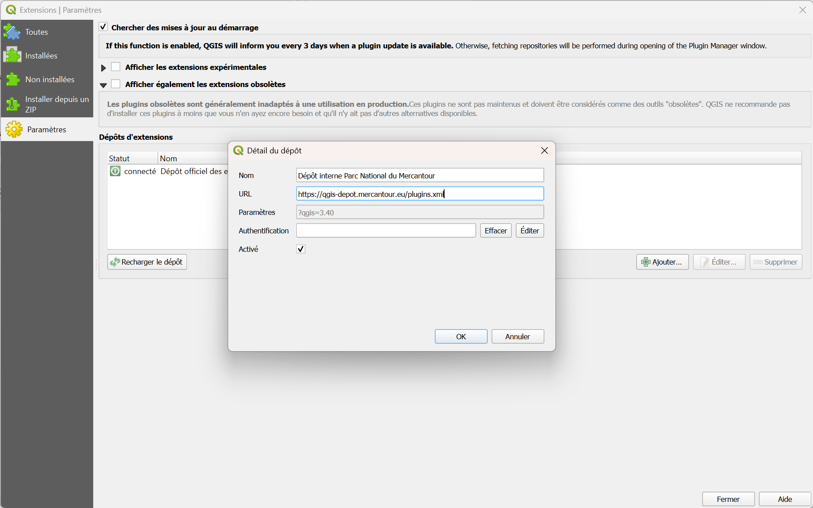

Installation d’un plugin QGIS depuis le dépôt interne du Parc National du Mercantour
Cette documentation explique comment installer un plugin QGIS en utilisant le dépôt interne d'extensions mis en place par l'équipe SI du PNM.
1. Ouvrir le gestionnaire de plugins
- Dans QGIS, aller dans le menu Extensions > Installer/Gérer les extensions…
2. Ajouter le dépôt interne
- Dans la fenêtre du gestionnaire d’extensions, cliquer sur l’onglet Paramètres.
- Cliquer sur le bouton Ajouter… dans la section Dépôts d’extensions.
- Renseigner les champs :
- Nom :
Dépôt interne Parc National du Mercantour - URL :
https://qgis-depot.mercantour.eu/plugins.xml

- Cliquer sur OK puis vérifier que le statut du dépôt est bien connecté.
3. Rechercher et installer le plugin
- Aller dans l’onglet Toutes.
- Chercher le plugin souhaité en utilisant la barre de recherche (ex. : Analyse Survol).
- Cliquer sur Installer l’extension.
Le plugin est maintenant disponible dans votre QGIS.
4. Vérifier le fonctionnement
- Le plugin apparaît dans le menu ou la barre d’outils correspondante.
- Vous pouvez également vérifier dans l’onglet Installées du gestionnaire d’extensions.
Notes
- Le dépôt interne est mis à jour régulièrement. Pour obtenir la dernière version d’un plugin, pensez à cliquer sur Vérifier les mises à jour.
- Pour désinstaller une extension, aller dans l'onglet Installées puis sélectionner une extension et cliquer sur Désinstaller
- Il est possible de désactiver une extension depuis l'onglet Installées, décocher l'extension à désactiver
- En cas de problème d’accès, assurez-vous que QGIS peut atteindre l’URL du dépôt (essayez d'accéder à
https://qgis-depot.mercantour.eu/plugins.xmldepuis un navigateur).